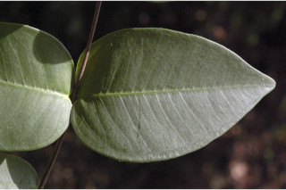
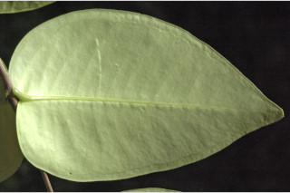
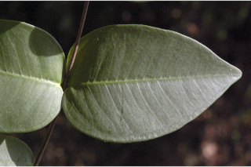
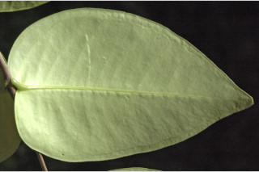

Images :
 




| Habit : | Small trees up to 5 m tall. |
| Leaves : | Leaves simple , opposite , decussate ; petiole 0.2 cm long, canaliculate , glabrous ; lamina 6-9.5 × 3.5-6, ovate to lanceolate , apex obtuse or shortly and broadly acuminate with blunt tip, base subcordate , margin entire , pellucid gland dotted, coriaceous , glabrous ; midrib canaliculate above; secondary_nerves 8 to 11 pairs, not prominent; intramarginal nerve present; tertiary_nerves broadly reticulate , slightly visible when dry. |
| Inflorescence / Flower : | Flowers in short crowded racemes , petals white. |
| Fruit and Seed : | Berry , crowned with calyx lobes ; seed one. |